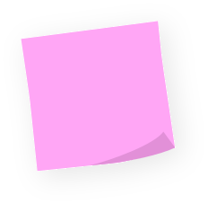
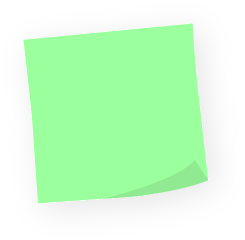
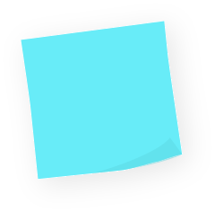
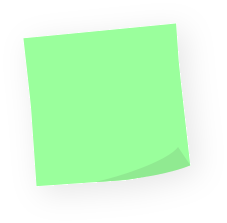

So, who is the person behind all the complaining?

After serving as a graphic designer in the IDF Education Corps, I was looking for a temporary job and started freelancing at 21. Apparently, I thought running a business was a reasonable thing to do at that age..
One project led to another, then advertising agencies started reaching out. Soon enough, I was working with big clients such as Reason Y (Planetanya, Moked Emun) and SCA (Padani, Soft Touch).
Logos, packaging, campaigns, print. Eventually I went to university to study Visual Communication at the University of Haifa (previously WIZO), to understand the “why” behind the things I was already doing.
What I enjoy most hasn’t changed since day one: taking something that doesn’t have a face yet, and giving it one.
I've never been particularly good at looking at something and thinking, “Well, that's just how it is.”
If something doesn't make sense, I want to know why. If something could work better, I'll probably notice it. And if something is 2px off...
Well.
Unfortunately, I will notice that too.
Some people notice faces. I notice fonts.
On menus, on street signs, on the back of a shampoo bottle. A typeface can make a brand feel warm, serious, cheap or expensive before anyone reads a single word.
At some point, choosing fonts wasn’t enough, so I designed my own.
Every letter has a personality. Getting them to work together is the fun part.
Before I design anything, I need to understand what I’m looking at.
Who the brand is. Who it’s talking to. What everyone else in the field looks like. What it should never look like.
Sometimes that means research. Sometimes it means a moodboard. Most of the time it means a pencil and a lot of very ugly first sketches.
Illustrator comes later.
How I got here
- Army service Graphic designer, IDF Education Corps
- At 21 Started freelancing
- Agencies Working with Reason Y and SCA
- University Visual Communication, University of Haifa
- While studying Product designer at Rounds
-
Now
Brand Designer
Currently
- Looking for my next adventure
- Noticing every badly kerned sign around me
What I work with
- Illustrator
- Photoshop
- InDesign
- Affinity
- Figma
- Claude
- Gemini
- ChatGPT
When I’m not designing..
-

Spots a typo from across the room. -

Danced Zumba for 5 years -

I used to draw. I should probably do that again... -
 Doing yoga since 2020
Doing yoga since 2020
-

I knit. Yes, really -

Judges restaurants by their menu font - Needs music to reset
- I take tiny things very seriously
- “But why?” is a lifestyle
- Never has “final_final_v2”
- Could eat sushi every day.